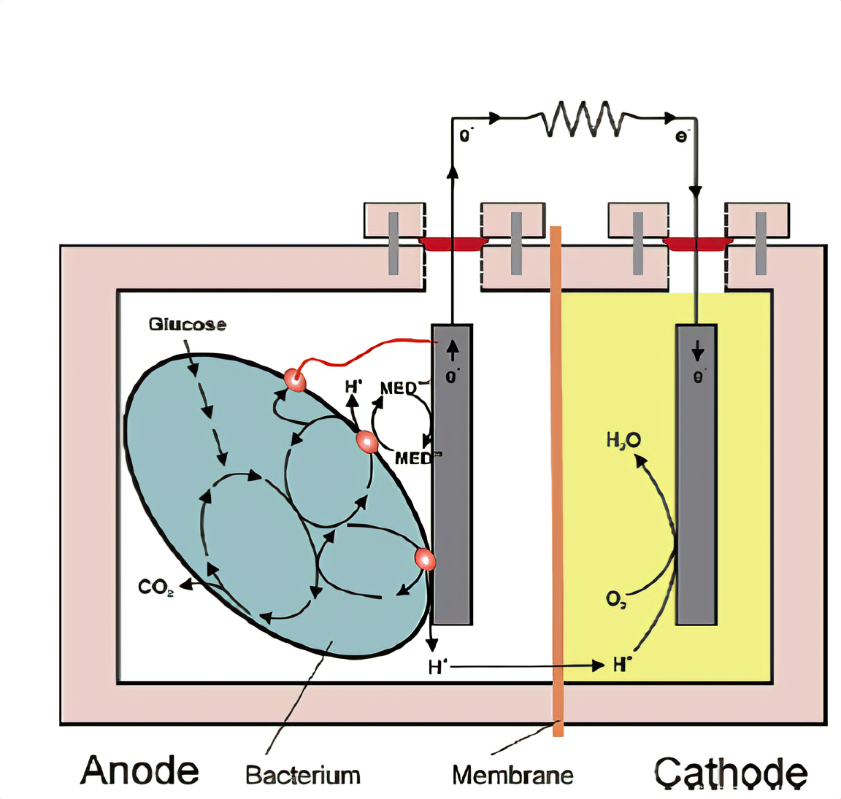

How MFCs Work
The working principle of microbial fuel cells is microbial electrogenesis. Microbial electrogenesis means the use of microorganisms to generate electrons. Once organic matter like wastewater or biodegradable material is introduced inside the anode chamber, microorganisms consume it as a food source.
As byproducts, the electron releases during the metabolic processes. From the chamber, the electrons transfer to the anode electrode. From the anode electrode, the electrons flow to the cathode electrode through an external electric circuit.
The commonly used electron acceptor, oxygen, present in the cathode reduces. This reduction catalyzes the combination of electrons and protons to form water. This redox reaction completes the electron transfer cycle, creating an electric current that can power various applications.The following chemical reaction summarizes the overall process of microbial metabolism and electron transfer;
Organic matter + Microbial metabolism → Electricity + Water + CO2. The following equation shows the reduction of oxygen in the cathode chamber;
O2 + 4H+ + 4e– → 2H2O [Eo = 1.23 V]

MFCs materials
1-cathod
2-anode
3-proton exchange membrane
4-external electric circuit
1-Upflow MFCs
This type of MFCs are cylinder-shaped MFC. It has a cathode chamber at the top, and an anode at the bottom. Glass wool and glass bead layers help apportion both chambers. The substrate is provided at the bottom of the anode, which moves upward to the cathode and leaves at the top.

2-single chamber MFCs
In this type of MFCs, both anode and cathode electrode are present in the same chamber which is separated by ion-exchange membrane. The design of this MFCs is simple which reduces internal resistance. However, it can limit oxygen diffusion which affects the performance of the cell.

3-double chamber MFCs
It is the simplest and most common design of MFCs. One chamber is used as an anode and the other as a cathode, separated by PEM. Anode has the microorganism, and the cathode has an electron acceptor

4-Mediator-based MFCs
In this type of MFCs, redox facilitates electron transfer between the microbial biofilm on the anode and the cathode. The electrons travel from bacteria to anode with the help of the mediator.

5-Mediatorless MFCs
This type of MFCs does not rely on external redox mediators. Instead, this method used naturally occurring exoelectrogens which directly transfer electrons to the anode. The cost of this operation may be lower due to its simple designs.

 Explore MFCs
Explore MFCs